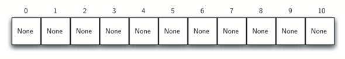
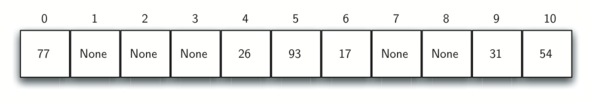
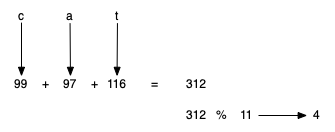
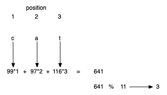
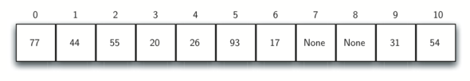
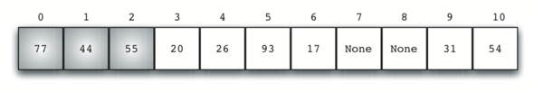
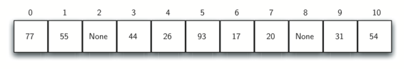
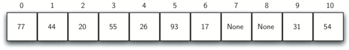
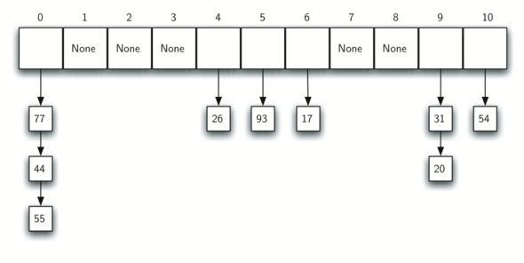

Section 5.5 Hashing
In previous sections we were able to make improvements in our search algorithms by taking advantage of information about where items are stored in the collection with respect to one another. For example, by knowing that a list was ordered, we could search in logarithmic time using a binary search. In this section we will attempt to go one step further by building a data structure that can be searched in \(O(1)\) time. This concept is referred to as hashing.
In order to do this, we will need to know even more about where the items might be when we go to look for them in the collection. If every item is where it should be, then the search can use a single comparison to discover the presence of an item. We will see, however, that this is typically not the case.
A hash table is a collection of items which are stored in such a way as to make it easy to find them later. Each position of the hash table, often called a slot, can hold an item and is named by an integer value starting at 0. For example, we will have a slot named 0, a slot named 1, a slot named 2, and so on. Initially, the hash table contains no items so every slot is empty. We can implement a hash table by using a list with each element initialized to the special Python value
None. Figure 5.5.1 shows a hash table of size \(m = 11\text{.}\) In other words, there are \(m\) slots in the table, named 0 through 10.

The mapping between an item and the slot where that item belongs in the hash table is called the hash function. The hash function will take any item in the collection and return an integer in the range of slot names between 0 and \(m - 1\text{.}\) Assume that we have the set of integer items 54, 26, 93, 17, 77, and 31. Our first hash function, sometimes referred to as the remainder method, simply takes an item and divides it by the table size, returning the remainder as its hash value (\(h(item)=item \% 11\)). Table 5.5.2 gives all of the hash values for our example items. Note that this remainder method (modulo) will typically be present in some form in all hash functions since the result must be in the range of slot names.
| Item | Hash Value |
|---|---|
| 54 | 10 |
| 26 | 4 |
| 93 | 5 |
| 17 | 6 |
| 77 | 0 |
| 31 | 9 |
Once the hash values have been computed, we can insert each item into the hash table at the designated position as shown in Figure 5.5.3. Note that 6 of the 11 slots are now occupied. This is referred to as the load factor, and is commonly denoted by \(\lambda = \frac {number\_of\_items}{table\_size}\text{.}\) For this example, \(\lambda = \frac {6}{11}\text{.}\)

Now when we want to search for an item, we simply use the hash function to compute the slot name for the item and then check the hash table to see if it is present. This searching operation is \(O(1)\) since a constant amount of time is required to compute the hash value and then index the hash table at that location. If everything is where it should be, we have found a constant time search algorithm.
You can probably already see that this technique is going to work only if each item maps to a unique location in the hash table. For example, if the item 44 had been the next item in our collection, it would have a hash value of 0 (\(44\ \%\ 11 = 0\)). Since 77 also had a hash value of 0, we would have a problem. According to the hash function, two or more items would need to be in the same slot. This is referred to as a collision (it may also be called a clash). Clearly, collisions create a problem for the hashing technique. We will discuss them in detail later.
Subsection 5.5.1 Hash Functions
Given a collection of items, a hash function that maps each item into a unique slot is referred to as a perfect hash function. If we know the items and the collection will never change, then it is possible to construct a perfect hash function. Unfortunately, given an arbitrary collection of items, there is no systematic way to construct a perfect hash function. Luckily, we do not need the hash function to be perfect to still gain performance efficiency.
One way to always have a perfect hash function is to increase the size of the hash table so that each possible value in the item range can be accommodated. This guarantees that each item will have a unique slot. Although this is practical for small numbers of items, it is not feasible when the number of possible items is large. For example, if the items were nine-digit Social Security numbers, this method would require almost one billion slots. If we only want to store data for a class of 25 students, we will be wasting an enormous amount of memory.
Our goal is to create a hash function that minimizes the number of collisions, is easy to compute, and evenly distributes the items in the hash table. To that end, there are a number of common ways to extend the simple remainder method. We will consider a few of them here.
The folding method for constructing hash functions begins by dividing the item into equal-sized pieces (the last piece may not be of equal size). These pieces are then added together to give the resulting hash value. For example, if our item was the phone number 436-555-4601, we would take the digits and divide them into groups of 2 (43, 65, 55, 46, 01). After the addition, \(43 + 65 + 55 + 46 + 01\text{,}\) we get 1. If we assume our hash table has 11 slots, then we need to perform the extra step of dividing by 11 and keeping the remainder. In this case \(210\ \%\ 11\) is 1, so the phone number 436-555-4601 hashes to slot 1. Some folding methods go one step further and reverse every other piece before the addition. For the above example, we get \(43 + 56 + 55 + 64 + 01 = 219\) which gives \(219\ \%\ 11 = 10\text{.}\)
Another numerical technique for constructing a hash function is called the mid-square method. We first square the item, and then extract some portion of the resulting digits. For example, if the item were 44, we would first compute \(44 ^{2} = 1936\text{.}\) By extracting the middle two digits, 93, and performing the remainder step, we get 5 (\(93\ \%\ 11\)). Table 5.5.4 shows items under both the remainder method and the mid-square method. You should verify that you understand how these values were computed.
| Item | Remainder | Mid-Square |
|---|---|---|
| 54 | 10 | 3 |
| 26 | 4 | 7 |
| 93 | 5 | 9 |
| 17 | 6 | 8 |
| 77 | 0 | 4 |
| 31 | 9 | 6 |
We can also create hash functions for character-based items such as strings. For example, the word cat can be thought of as a sequence of ordinal values.
>>> ord("c")
99
>>> ord("a")
97
>>> ord("t")
116
We can then take these three ordinal values, add them up, and use the remainder method to get a hash value (see Figure 5.5.5). Listing 5.5.6 shows a function called
hash_str that takes a string and a table size and returns the hash value in the range from 0 to table_size-1.

It is interesting to note that when using this hash function, anagrams will always be given the same hash value. To remedy this, we could use the position of the character as a weight. Figure 5.5.7 shows one possible way to use the positional value as a weighting factor. The modification to the
hash_str function is left as an exercise.

You may be able to think of a number of additional ways to compute hash values for items in a collection. The important thing to remember is that the hash function has to be efficient so that it does not become the dominant part of the storage and search process. If the hash function is too complex, then it becomes more work to compute the slot name than it would be to simply do a basic sequential or binary search as described earlier. This would quickly defeat the purpose of hashing.
Subsection 5.5.2 Collision Resolution
We now return to the problem of collisions. When two items hash to the same slot, we must have a systematic method for placing the second item in the hash table. This process is called collision resolution. As we stated earlier, if the hash function is perfect, collisions will never occur. However, since this is often not possible, collision resolution becomes a very important part of hashing.
One method for resolving collisions looks into the hash table and tries to find another open slot to hold the item that caused the collision. A simple way to do this is to start at the original hash value position and then move in a sequential manner through the slots until we encounter the first slot that is empty. Note that we may need to go back to the first slot (circularly) to cover the entire hash table. This collision resolution process is referred to as open addressing in that it tries to find the next open slot or address in the hash table. By systematically visiting each slot one at a time, we are performing an open addressing technique called linear probing.
Figure 5.5.8 shows an extended set of integer items under the simple remainder method hash function (54, 26, 93, 17, 77, 31, 44, 55, 20). Table 5.5.2 above shows the hash values for the original six items and Figure 5.5.3 shows the contents of a hash table with those six items. Let’s see what happens when we attempt to place the additional three items into the table. When we attempt to place 44 into slot 0, a collision occurs. Under linear probing, we look sequentially, slot by slot, until we find an open position. In this case, we find slot 1.
Again, 55 should go in slot 0 but must be placed in slot 2 since it is the next open position. The final value of 20 hashes to slot 9. Since slot 9 is full, we begin to do linear probing. We visit slots 10, 0, 1, and 2, and finally find an empty slot at position 3.

Once we have built a hash table using open addressing and linear probing, it is essential that we utilize the same methods to search for items. Assume we want to look up the item 93. When we compute the hash value, we get 5. Looking in slot 5 reveals 93, and we can return
True. What if we are looking for 20? Now the hash value is 9, and slot 9 is currently holding 31. We cannot simply return False since we know that there could have been collisions. We are now forced to do a sequential search, starting at position 10, looking until either we find the item 20 or we find an empty slot.
A disadvantage to linear probing is the tendency for clustering; items become clustered in the table. This means that if many collisions occur at the same hash value, a number of surrounding slots will be filled by the linear probing resolution. This will have an impact on other items that are being inserted, as we saw when we tried to add the item 20 above. A cluster of values hashing to 0 had to be skipped to finally find an open position. This cluster is shown in Figure 5.5.9.

One way to deal with clustering is to extend the linear probing technique so that instead of looking sequentially for the next open slot, we skip slots, thereby more evenly distributing the items that have caused collisions. This will potentially reduce the clustering that occurs. Figure 5.5.10 shows the items when collision resolution is done with what we will call a “plus 3” probe. This means that once a collision occurs, we will look at every third slot until we find one that is empty.

The general name for this process of looking for another slot after a collision is rehashing. With simple linear probing, the rehash function is \(new\_hash = rehash(old\_hash)\) where \(rehash(pos) = (pos + 1) \% size\text{.}\) The plus 3 rehash can be defined as \(rehash(pos) = (pos + 3) \% size\text{.}\) In general, \(rehash(pos) = (pos + skip) \% size\text{.}\) It is important to note that the size of the skip must be such that all the slots in the table will eventually be visited. Otherwise, part of the table will be unused. To ensure this, it is often suggested that the table size be a prime number. This is the reason we have been using 11 in our examples.
A variation of the linear probing idea is called quadratic probing. Instead of using a constant skip value, we use a rehash function that increments the hash value by 1, 3, 5, 7, 9, and so on. This means that if the first hash value is \(h\text{,}\) the successive values are \(h + 1\text{,}\) \(h + 4\text{,}\) \(h + 9\text{,}\) \(h + 16\text{,}\) and so on. In general, the \(i\) will be \(i ^ {2}\) and \(rehash(pos) = (h + i ^ {2}) \% size\text{.}\) In other words, quadratic probing uses a skip consisting of successive perfect squares. Figure 5.5.11 shows our example values after they are placed using this technique.

An alternative method for handling the collision problem is to allow each slot to hold a reference to a collection (or chain) of items. Chaining allows many items to exist at the same location in the hash table. When collisions happen, the item is still placed in the proper slot of the hash table. As more and more items hash to the same location, the difficulty of searching for the item in the collection increases. Figure 5.5.12 shows the items as they are added to a hash table that uses chaining to resolve collisions.

When we want to search for an item, we use the hash function to generate the slot where it should reside. Since with chaining each slot holds a collection, we use a searching technique to decide whether the item is present. The advantage is that on the average there are likely to be many fewer items in each slot, so the search is perhaps more efficient. We will look at the analysis for hashing at the end of this section.
Exercises Self Check
2.
Q-2: Suppose you are given the following set of keys to insert into a hash table that holds exactly 11 values: 113 , 117 , 97 , 100 , 114 , 108 , 116 , 105 , 99 Which of the following best demonstrates the contents of the hash table after all the keys have been inserted using linear probing?
- 100, __, __, 113, 114, 105, 116, 117, 97, 108, 99
- It looks like you may have been doing modulo 2 arithmentic. You need to use the hash table size as the modulo value.
- 99, 100, __, 113, 114, __, 116, 117, 105, 97, 108
- Using modulo 11 arithmetic and linear probing gives these values
- 100, 113, 117, 97, 14, 108, 116, 105, 99, __, __
- It looks like you are using modulo 10 arithmetic, use the table size.
- 117, 114, 108, 116, 105, 99, __, __, 97, 100, 113
- Be careful to use modulo not integer division.
Subsection 5.5.3 Implementing the Map Abstract Data Type
One of the most useful Python collections is the dictionary. Recall that a dictionary is an associative data type where you can store key-data pairs. The key is used to look up the associated data value. We often refer to this idea as a map.
The map abstract data type is defined as follows. The structure is an unordered collection of associations between a key and a data value. The keys in a map are all unique so that there is a one-to-one relationship between a key and a value. The operations are given below.
-
Map()creates a new empty map. -
put(key, val)adds a new key–value pair to the map. If the key is already in the map, it replaces the old value with the new value. -
size()returns the number of key–value pairs stored in the map. -
inreturnTruefor a statement of the formkey in mapif the given key is in the map,Falseotherwise.
One of the great benefits of a dictionary is the fact that given a key, we can look up the associated data value very quickly. In order to provide this fast look-up capability, we need an implementation that supports an efficient search. We could use a list with sequential or binary search, but it would be even better to use a hash table as described above since looking up an item in a hash table can approach \(O(1)\) performance.
In Listing 5.5.13 we use two lists to create a
HashTable class that implements the map abstract data type. One list, called slots, will hold the key items and a parallel list, called data, will hold the data values. When we look up a key, the corresponding position in the data list will hold the associated data value. We will treat the key list as a hash table using the ideas presented earlier. Note that the initial size for the hash table has been chosen to be 11. Although this is arbitrary, it is important that the size be a prime number so that the collision resolution algorithm can be as efficient as possible.
As seen in Listing 5.5.14,
hash_function implements the simple remainder method. The collision resolution technique is linear probing with a “plus 1” rehash value. The put function (see Listing 5.5.14) assumes that there will eventually be an empty slot unless the key is already present in the self.slots. It computes the original hash value and if that slot is not empty, iterates the rehash function until an empty slot occurs. If a nonempty slot already contains the key, the old data value is replaced with the new data value.
The
get function (see Listing 5.5.15) begins by computing the initial hash value. If the value is not in the initial slot, rehash is used to locate the next possible position. Notice that line 14 guarantees that the search will terminate by checking to make sure that we have not returned to the initial slot. If that happens, we have exhausted all possible slots and the item must not be present.
The final methods of the
HashTable class provide additional dictionary functionality. We overload the __getitem__ and __setitem__ methods to allow access using []. This means that once a HashTable has been created, the familiar index operator will be available. We leave the remaining methods as exercises.
def get(self, key):
start_slot = self.hash_function(key, len(self.slots))
position = start_slot
while self.slots[position] is not None:
if self.slots[position] == key:
return self.data[position]
else:
position = self.rehash(position, len(self.slots))
if position == start_slot:
return None
def __getitem__(self, key):
return self.get(key)
def __setitem__(self, key, data):
self.put(key, data)
The following session shows the
HashTable class in action. First we will create a hash table and store some items with integer keys and string data values.
>>> h = HashTable()
>>> h[54] = "cat"
>>> h[26] = "dog"
>>> h[93] = "lion"
>>> h[17] = "tiger"
>>> h[77] = "bird"
>>> h[31] = "cow"
>>> h[44] = "goat"
>>> h[55] = "pig"
>>> h[20] = "chicken"
>>> h.slots
[77, 44, 55, 20, 26, 93, 17, None, None, 31, 54]
>>> h.data
['bird', 'goat', 'pig', 'chicken', 'dog', 'lion',
'tiger', None, None, 'cow', 'cat']
Next we will access and modify some items in the hash table. Note that the value for the key 20 is being replaced.
>>> h[20]
'chicken'
>>> h[17]
'tiger'
>>> h[20] = "duck"
>>> h[20]
'duck'
>>> h.data
['bird', 'goat', 'pig', 'duck', 'dog', 'lion',
'tiger', None, None, 'cow', 'cat']
>> print(h[99])
None
The complete hash table example can be found in ActiveCode 1.
Subsection 5.5.4 Analysis of Hashing
We stated earlier that in the best case hashing would provide an \(O(1)\text{,}\) constant time search technique. However, due to collisions, the number of comparisons is typically not so simple. Even though a complete analysis of hashing is beyond the scope of this text, we can state some well-known results that approximate the number of comparisons necessary to search for an item.
The most important piece of information we need to analyze the use of a hash table is the load factor, \(\lambda\text{.}\) Conceptually, if \(\lambda\) is small, then there is a lower chance of collisions, meaning that items are more likely to be in the slots where they belong. If \(\lambda\) is large, meaning that the table is filling up, then there are more and more collisions. This means that collision resolution is more difficult, requiring more comparisons to find an empty slot. With chaining, increased collisions means an increased number of items on each chain.
As before, we will have a result for both a successful and an unsuccessful search. For a successful search using open addressing with linear probing, the average number of comparisons is approximately \(\frac{1}{2}\left(1+\frac{1}{1-\lambda}\right)\) and an unsuccessful search gives \(\frac{1}{2}\left(1+\left(\frac{1}{1-\lambda}\right)^2\right)\) If we are using chaining, the average number of comparisons is \(1 + \frac {\lambda}{2}\) for the successful case, and simply \(\lambda\) comparisons if the search is unsuccessful.